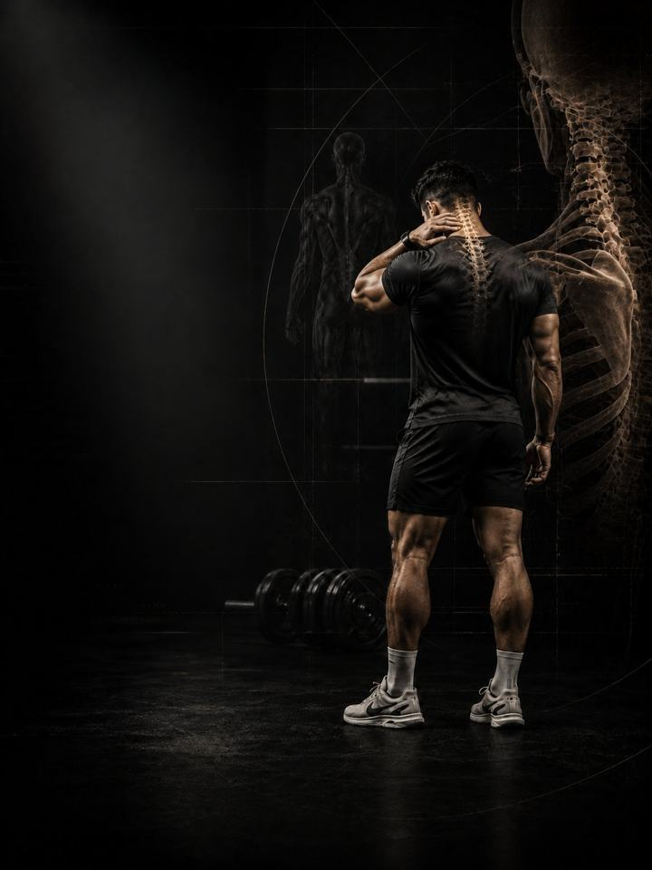

آلام الرقبة
خفّف الحمل عن الرقبة ببناء منتصف الظهر والكتفين اللذين كان يُفترض أن يحملاه.
- مناسب لـرقاب العاملين على المكاتب التي تحترق بحلول المساء وتجلب صداع التوتر
- الجدولروتين يومي مدته 10–15 دقيقة، و3 أيام قوة في الأسبوع
- المعداتالروتين اليومي يحتاج إلى سجادة وشريط مطاطي. أيام القوة تحتاج إلى نادٍ متكامل.
- الصيغةملف PDF للهاتف، وكل تمرين مرتبط بفيديو توضيحي
لماذا يعود ألم الرقبة مرة بعد مرة
تحمل الرقبة رأسًا يزن نحو خمسة كيلوغرامات، وتؤدّي هذه المهمة جيدًا، إلى أن يتيبّس منتصف الظهر، وينحني الكتفان إلى الأمام، ويتقدّم الرأس أمام الجسم. عندها تعمل العضلات نفسها طوال اليوم بلا استراحة. وبحلول المساء تحترق وتؤلم، وتجرّ معها صداعًا يصعد إلى مؤخرة الرأس.
إطالتها تريحك عشر دقائق ولا تغيّر شيئًا، لأن الشدّ هنا علامة على الإجهاد الزائد لا سببه. ولا شيء في ذلك تقصير أخلاقي، فكثيرون يجلسون جلسة سيئة ولا يشعرون بشيء. المهم هو كم من الوقت تبقى في الوضعية، وكم تستطيع العضلات المحيطة دعمها. يعيد هذا البرنامج بناء قوة الرقبة العميقة ودعم منتصف الظهر، وهما ما يسمح لتلك العضلات بأن ترتاح أخيرًا.
أسبوعك
روتين يومي قصير، وثلاثة أيام قوة في النادي. أي ثلاثة أيام تصلح، ما دامت غير متتالية. هذا مثال واحد:
| الأحد | الاثنين | الثلاثاء | الأربعاء | الخميس | الجمعة | السبت |
|---|---|---|---|---|---|---|
| اليوم 1 + الروتين اليومي | الروتين اليومي | اليوم 2 + الروتين اليومي | الروتين اليومي | اليوم 3 + الروتين اليومي | الروتين اليومي | الروتين اليومي |
كيف يسير البرنامج:
- الاختبار أولًا. أربعة اختبارات قبل الأسبوع 1، تُعاد بعد الأسبوعين 3 و6.
- الروتين اليومي، 10–15 دقيقة. سبع حركات، كل يوم. وفي أيام القوة يُعدّ هو الإحماء أيضًا.
- أيام القوة. اليوم 1 ثم 2 ثم 3، بالترتيب، لتدريب الرقبة وأعلى الظهر.
الأنماط الخمسة وراء معظم آلام الرقبة
هذه الأنماط الخمسة متداخلة كثيرًا، ومعظم رقاب العاملين على المكاتب تُظهر ثلاثة منها في وقت واحد. أصلِح الدعم، وستُصلح الوضعية نفسها.
-
تقدّم الرأس للأمام. كل سنتيمتر يتقدّمه الرأس إلى الأمام يزيد العمل الذي تبذله العضلات في مؤخرة الرقبة لتحمله. ابقَ على ذلك ثماني ساعات، ولن تحصل العضلات عند قاعدة الجمجمة على أي راحة، وهناك تحديدًا يبدأ صداع التوتر. في البرنامج: إدخال الذقن بمقاومة، ثبات الرقبة، تمارين الحمل
-
ضعف عضلات الرقبة العميقة الأمامية. العضلات الصغيرة في مقدّمة الرقبة مهمتها إبقاء الرأس متمركزًا فوق الجسم. وعندما تتعب، تتولّى العضلات السطحية الكبيرة مهمة لم تُصمَّم لها أصلًا، وتُعلمك بذلك بحلول منتصف بعد الظهر. في البرنامج: إيماء الرأس بمقاومة، إدخال الذقن، ثبات الرقبة
-
إجهاد العضلة شبه المنحرفة العلوية. ينتهي الأمر بأعلى الكتفين وهو يحمل لوحي الكتف والذراعين ونصف الرأس. تشعر بأنها مشدودة دائمًا لأنها تعمل دائمًا، ولا يمكن لأي قدر من الإطالة أن يسبق ثماني ساعات من الحمل. في البرنامج: رفع الذراعين بشكل Y منبطحًا، سحب الحبل للوجه، حمل المزارع
-
استدارة الكتفين للأمام. صدر قصير ومنتصف ظهر خامل يتركان الكتفين ينجرفان إلى الأمام، فيجرّان الرأس معهما. وتعمل الرقبة عندها على قاعدة استسلمت بالفعل. في البرنامج: إطالة الصدر، فتح الشريط المطاطي، التجديف
-
تيبّس منتصف الظهر. عندما لا يتمدّد منتصف الظهر ولا يدور، تستعير الرقبة الحركة منه. كل التفاتة للرأس، وكل مدّ للذراع فوق الرأس، يأخذ مدى من جزء أعطى بالفعل كل ما لديه. في البرنامج: فتح منتصف الظهر، إدخال الخيط في الإبرة، دوران منتصف الظهر على الحائط
تمارين نمطك الإضافية. يذكر ملف PDF تمارين إضافية لكل نمط. اختر نمطين على الأكثر من الأنماط الأقرب إليك، وأضف تمارينهما في نهاية كل يوم قوة، 3 مجموعات لكل تمرين.
كيف تتقدّم الأسابيع الـ6
الروتين اليومي يبقى كما هو طوال الأسابيع الستة. وأيام القوة تنتقل مستوى أعلى كل أسبوعين.
| الأسبوعان 1–2 | الأسبوعان 3–4 | الأسبوعان 5–6 | |
|---|---|---|---|
| المرحلة | التحكّم | البناء | الدمج |
| التركيز | تمارين الثبات والتحكّم | التجديف والضغط بالحمل | بالحمل وفي وضع الوقوف: تمارين الحمل |
| المجموعات الفعلية أسبوعيًا | 54 | 54 | 54 |
في الأسبوعين 1–2 كل الأحمال بوزن الجسم أو بالشريط المطاطي أو خفيفة، ولا يُحدَّد للمجموعات مستوى جهد. الجهد يضبطه التحكّم وقواعد الألم. أول الأحمال المحدّدة بالجهد تأتي في الأسبوعين 3–4، بمتوسط جهد نحو 6/10، ويرتفع إلى 6.3 في الأسبوعين 5–6. هذا المقياس هو الجهد (RPE)، أي تقييم من 1 إلى 10 لمدى صعوبة المجموعة: «جهد 6/10» يعني أنه يتبقى في الخزان نحو 4 تكرارات، و«جهد 6.3/10» نحو 3 إلى 4.
القواعد التي تجعله ينجح
- يزداد العمل كلما استحقّت الرقبة ذلك. تمارين الثبات والتحكّم أولًا، ثم التجديف والضغط، ثم تمارين الحمل. كل مرحلة مدتها أسبوعان.
- الروتين اليومي هو العلاج، وأيام القوة هي التمرين. الروتين لا يتغيّر، حتى يؤدّي دوره كل يوم.
- استمر في التمرين. في ملف PDF بدائل للرفعات التي تدفع الرأس للأمام، فلا تضطر إلى إيقاف كل شيء بينما تهدأ الرقبة.
- القرارات تتبع الأرقام. تعيد الاختبار بعد الأسبوعين 3 و6.
كيف تقيس تقدّمك
أربعة اختبارات قبل الأسبوع 1، ثم مرة أخرى بعد الأسبوعين 3 و6، تسجّلها في جدول النتائج في ملف PDF. والاختبارات الأربعة هي: ثبات عضلات الرقبة العميقة الأمامية، واختبار مؤخرة الرأس على الحائط، ودوران الرقبة، وملاك الحائط.
شكل التقدّم الجيد
- الأسبوعان 1–2: يخفّ الاحتراق في فترة بعد الظهر، ويقلّ تكرار الصداع.
- الأسبوعان 3–4: تطول مدة ثبات عضلات الرقبة العميقة الأمامية، ويتّسع مدى الدوران.
- الأسبوعان 5–6: تصبح تمارين الحمل سهلة، ويستقر الرأس للخلف دون أن تفكّر في ذلك.
إذا لم يتغيّر شيء عند إعادة الاختبار في الأسبوع 3، فاحصل على تقييم من مختص بدلًا من الضغط أكثر.
معيار الإنهاء في الأسبوع 6: ألم 2/10 أو أقل في نهاية يوم العمل لمدة أسبوعين متتاليين، وثبات عضلات الرقبة العميقة الأمامية يتجاوز 30 ثانية، وملاك حائط يصل إلى ما فوق الرأس دون أن يبتعد أسفل الظهر أو الرأس عن الحائط.
اكسر الوضعية
الرقبة لا تُجهَد في النادي، بل في الساعات الثماني التي تسبق وصولك إليه. خذ استراحة واحدة عن كل ساعة تقضيها على المكتب أو الهاتف: قف، وأدخل ذقنك، وأدِر كتفيك إلى الخلف، وخذ ثلاثة أنفاس بطيئة. ثلاثون ثانية. وحافظ أيضًا على مسكّنَين مجانيين: 7–9 ساعات من النوم، والتحكّم في التوتر. واستخدم وسادة داعمة واحدة، لا وسادتين فوق بعضهما.
الأدلة العلمية
كل برنامج في المكتبة مبني على أبحاث منشورة، وقوة تلك الأبحاث مذكورة صراحةً لا ضمنًا. وحيث تكون الأدلة محدودة، تقول الصفحة ذلك.
| النتيجة | المصدر | ما لا تُظهره |
|---|---|---|
| تدريب القوة يخفض الإصابات الرياضية إلى أقل من ثلث معدلها في المجموعة الضابطة. أما الإطالة فلا تخفضها. | Lauersen, Bertelsen & Andersen, British Journal of Sports Medicine 2014. Meta-analysis of 25 randomised trials, 26,610 participants. PMID 24100287 | نسبة الخطر 0.32 لتدريب القوة و0.96 للإطالة. تفاوتت التجارب كثيرًا، ولم تكن الجرعة موحّدة. |
| أي وصفة تدريب معقولة أفضل من عدم التدريب. الأحمال الأثقل تحتل المرتبة الأعلى للقوة. | Currier, McLeod, Banfield et al., British Journal of Sports Medicine 2023. Network meta-analysis, 178 strength and 119 hypertrophy studies. PMID 37414459 | كانت الفروق بين الوصفات صغيرة، وكلها نجحت. |
| تستمر القوة في التحسّن كلما زادت المجموعات الأسبوعية، مع تناقص العائد. والتمرين بعدد مرات أكبر في الأسبوع يفيد القوة بشكل ثابت. | Pelland, Remmert, Robinson, Hinson & Zourdos, Sports Medicine 2025. Meta-regressions, 67 studies, 2,058 participants (79% male). PMID 41343037 | طريقة احتساب المجموعات (مباشرة أو غير مباشرة) تغيّر الأرقام كثيرًا. |
ماذا بعد
بعد 6 أسابيع:
- الكتفان يحتاجان إلى عمل أيضًا: الكتف ولوح الكتف
- ابنِ القوة والعضلات: القوة الأساسية
- تدرّب كرياضي: التطوير الرياضي
- منطقة أخرى تحتاج إلى عمل: السلسلة التصحيحية
قبل الشراء: احصل على موافقة طبية أولًا إذا
- كان لديك ألم في الصدر، أو ضيق تنفس غير معتاد، أو خفقان، أو دوخة أثناء المجهود.
- كان لديك ضغط دم مرتفع غير منضبط، أو مرض قلبي معروف، أو خضعت لعملية جراحية مؤخرًا.
- كنتِ حاملًا أو بعد الولادة بفترة قصيرة. احصلي على موافقة وبرنامج مخصص أولًا.
- بدأ الألم بإصابة محددة (صوت فرقعة، أو انهيار المفصل، أو تورم خلال ساعات)، أو لديك تنميل أو ضعف أو حرارة أو ألم يوقظك ليلًا.
هذا البرنامج إرشاد عام للياقة البدنية، ولا يغني عن التقييم الطبي.